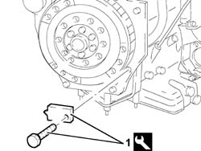
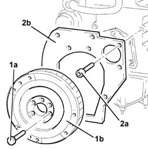
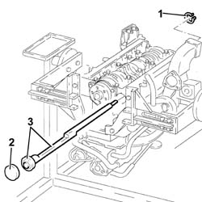
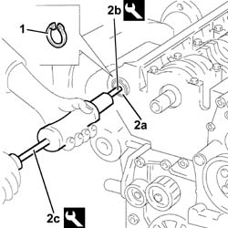
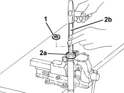
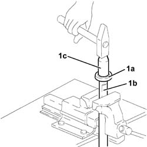
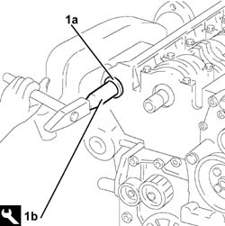
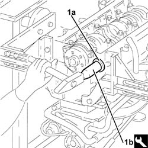

1012B40 counter - rotating shaft bearings - r r
- Path
- Procedures > 10 ENGINE > 1012 ENGINE CRANKCASE > 1012B engine crank case bushes and bearings > 1012B40 counter - rotating shaft bearings - r r
- Kind
- repair procedure (removal / refitting; the operation number is the code)
- Applies to
- engines: 2.4 JTD 10v; all production periods
- Interactive page
- https://sloeber94.github.io/elrnDB-a156/en/#/3239099
Applies to: engines: 2.4 JTD 10v; all production periods
 Removing
Removing
 Refitting
Refitting1. Fit the tool.
 | Name | Country |
|---|---|---|
1 | Counter-torque | 1.820.624.000 |

Applies to: engines: 2.4 JTD 10v; all production periods
Loosen the bolt for the drive pulley.
1. Undo the bolts (1a) and remove the flywheel (1b).
2. Undo the bolts (2a) and remove the flywheel protective guard (2b).

Applies to: engines: 2.4 JTD 10v; all production periods
1004D40 engine - position on stand and remove
1020D17 engind front cover - r r
1. Remove the circlip securing the counter-balance shaft to the front bearing.
2. Remove the rear counter-balance shaft plug.
3. Remove the counter-balance shaft, complete with rear bearing, using a suitable drift.

Applies to: engines: 2.4 JTD 10v; all production periods
1. Remove the circlip retaining the front bearing to the cylinder block/crankcase.
2. Remove the counter-balance shaft front bearing (2a) from the cylinder block/crankcase using the tools (2b) and (2c).
| Name | Country |
|---|---|---|
2b | Extractor | 1.820.626.000 |
| Name | Country |
|---|---|---|
2c | Counter weight | 1.840.206.001 |

Applies to: engines: 2.4 JTD 10v; all production periods
1. Remove the circlip retaining the rear counter-balance shaft bearing.
2. Position the counter-balance shaft in a vice fitted with protective jaws and remove the rear bearing (2a) using a suitable drift (2b).

Applies to: engines: 2.4 JTD 10v; all production periods
Refitting
Removing1. Fit the rear bearing (1a) on the counter-balance shaft (1b) using a suitable drift (1c).
Fix the rear bearing on the counter-balance shaft using the cirlip.

Applies to: engines: 2.4 JTD 10v; all production periods
1. Fit the counter-balance shaft front bearing (1a) on the crankcase using the tool (1b).
| Name | Country |
|---|---|---|
1b | Fitting tool | 1.821.247.000 |
Fix the counter-balance shaft front bearing to the crankcase using the circlip.

Applies to: engines: 2.4 JTD 10v; all production periods
Fit the O-Ring on the counter-balance shaft.
1. Fit the counter-balance shaft, complete with rear bearing (1a), in the cylinder block/crankcase using the tool (1b).
| Name | Country |
|---|---|---|
1b | Fitting tool | 1.821.247.000 |
Fit the circlip retaining the counter-balance shaft to the front bearing.
Fit the counter-balance shaft rear plug using the tool.
| Name | Country |
|---|---|---|
- | Fitting tool | 1.821.247.000 |

Applies to: engines: 2.4 JTD 10v; all production periods
1020D17 engind front cover - r r
1004D40 engine - position on stand and remove
Fit the flywheel protective guard.
Fit the flywheel and tighten the bolts to the recommended torque.
 | Fastening | Component | Ø | Value (daNm) |
|---|---|---|---|---|
- | Bolt | FLYWHEEL | M12 | 13.6 - 16.8 |
Remove the tools.